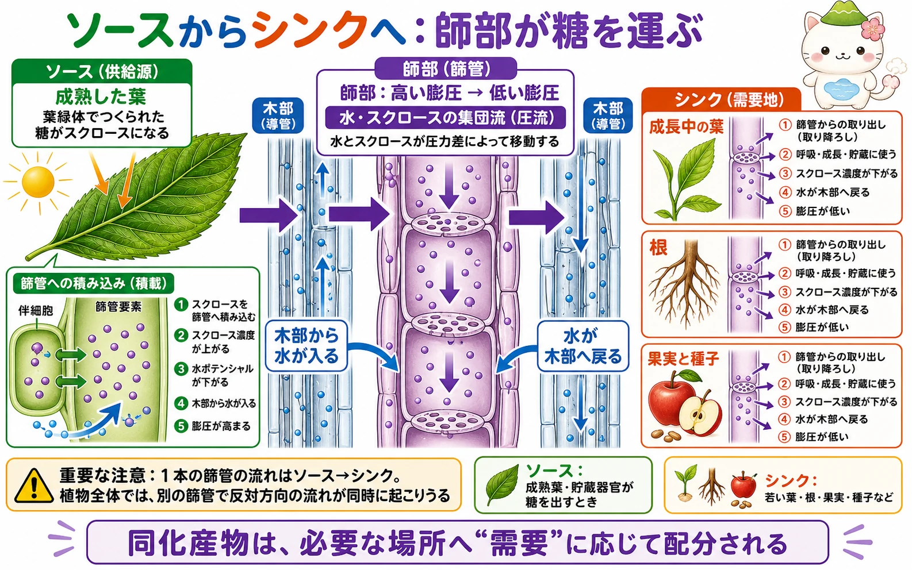
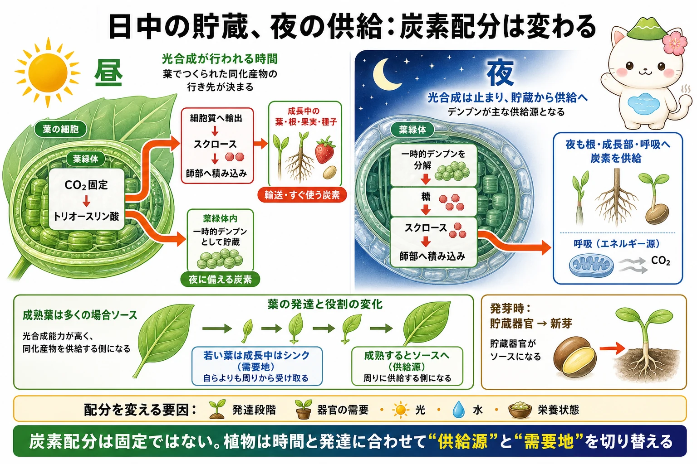

ソースとシンクとは何か
ソースは、師部へ有機物を正味で送り出す器官です。典型例は、光合成能力が十分に高い成熟葉です。貯蔵器官も、発芽や再成長のときに貯蔵炭水化物を動員すればソースになります。シンクは、師部から有機物を正味で受け取る器官です。若い葉、根、花、果実、種子、成長点、肥大中の塊根や塊茎などが代表例です。
師部で運ばれる中心的な糖は、多くの植物でスクロースです。スクロースは呼吸の基質になり、細胞壁やタンパク質などをつくる材料になり、デンプン・油・果実の糖などの貯蔵物にも変わります。師部は糖だけでなく、アミノ酸、ホルモン、情報を担う分子なども運びますが、この冊子では糖の流れに焦点を当てます。
師部への積み込みと圧流
葉肉細胞でつくられた糖は、細胞質側でスクロースへ変えられ、篩管要素と伴細胞からなる師部へ積み込まれます。積み込みには細胞間を拡散的につなぐ型も、H+勾配と輸送体を使って濃縮する型もあり、種によって仕組みは異なります。いずれにしてもソース側の篩管液ではスクロース濃度が上がります。
スクロース濃度が上がると水ポテンシャルが下がるため、隣の木部から水が入ります。篩管の膨圧は高くなり、シンク側との圧力差が生まれます。この圧力差により、水と溶けたスクロースが篩管をまとめて移動するという考え方が圧流説です。木部が主に水と無機イオンを運ぶのに対し、師部は同化産物を多く運びます。


師部の流れは「下向き」と覚えないでね。ある篩管ではソースからシンクへ流れるけれど、植物全体では別の篩管で反対方向の流れも同時に起こりうるんだ。
シンクでの取り降ろしと利用
シンクに着いたスクロースは篩管から取り降ろされ、呼吸、細胞の材料、貯蔵へ回されます。取り降ろしによって篩管液のスクロース濃度は下がり、水ポテンシャルが上がります。水の一部は木部へ戻り、シンク側の膨圧は低く保たれます。こうしてソースとシンクの圧力差が保たれます。
同じ量の糖が全ての器官へ均等に配られるわけではありません。分裂・伸長が盛んな組織、種子や果実の形成、根の伸長などでは需要が大きくなります。器官の発達段階、ホルモン、光、水、無機栄養、温度、病害虫への応答などが、どのシンクがどれだけ糖を受け取るかに影響します。
昼の貯蔵、夜の供給
日中に葉緑体でCO2固定により得た炭素は、すべてがすぐ師部へ出るわけではありません。一部は細胞質へ出てスクロースとなり、その日のうちにシンクへ運ばれます。別の一部は葉緑体内で一時的デンプンとして蓄えられます。これは夜間にも炭素を供給するための備えです。
夜になると光合成は止まります。葉では一時的デンプンが分解され、糖を経てスクロースがつくられ、師部を通じて根や成長部へ届けられます。日長に合わせてデンプンの分解速度を調整し、夜の途中で炭素が尽きないようにする植物もあります。炭素配分は、昼と夜をつなぐ時間の調整でもあります。

ソースとシンクは入れ替わる
ソースとシンクは、器官に貼られた永久のラベルではありません。展開中の若い葉は、十分な光合成能力を持つまで周囲から糖を受け取るシンクです。成熟して自らの必要を超える糖をつくれるようになると、周囲へ糖を送るソースになります。発芽時には、種子や地下の貯蔵器官がソースとなり、新芽や根がシンクになります。
この見方を使うと、果実が太る時期、根が伸びる時期、剪定や落葉の後、干ばつのときなどに植物全体がどう変わるかを考えられます。植物は得た炭素を固定的に分けるのではなく、その時々の需要と供給に合わせて配分を変えています。
成熟葉はいつも主役、というわけでもないよ。春に芽が動くときは、前年にためた炭素が新芽を育てる。植物の「送り手」と「受け手」は、季節や成長で交代するんだ。
この冊子の要点
- ソースは師部へ糖を送り出す器官、シンクは糖を受け取って使う・貯蔵する器官です。
- 多くの植物ではスクロースが師部輸送の中心で、積み込みによる水ポテンシャルと膨圧の差が圧流を生みます。
- 師部では、1本の篩管ごとにはソースからシンクへ流れます。植物全体では複数の方向の流れが同時にありえます。
- 葉は昼にスクロースを輸送しながら一時的デンプンも蓄え、夜にはそのデンプンを分解して炭素供給を続けます。
- ソースとシンクの関係は発達段階と環境に応じて変わり、炭素配分は植物の成長と生存を左右します。
参照資料
- OpenStax Biology 2e：Stems
- Taiz et al., Plant Physiology and Development, Oxford University Press.
- Lucas et al., “The Plant Vascular System: Evolution, Development and Functions,” Journal of Integrative Plant Biology.